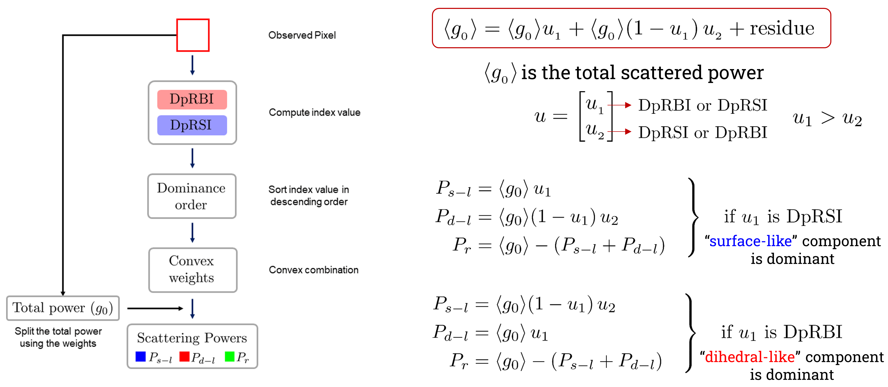
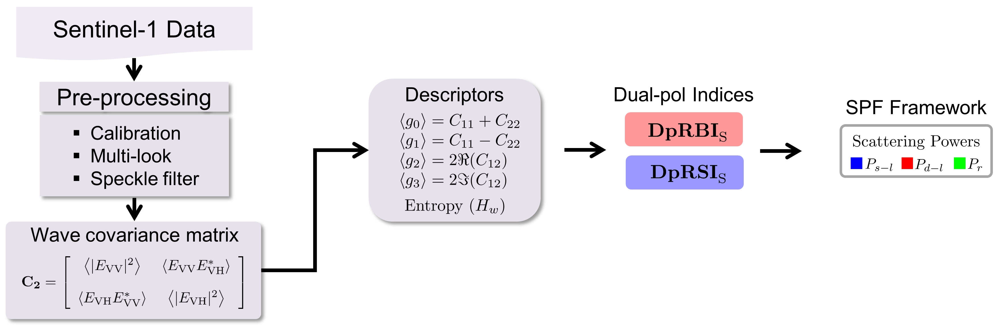

| Dual-pol Scattering Powers (Factorization) Generation | |

Microwave Remote Sensing Lab (MRSLab)
Indian Institute of Technology Bombay, India
Contributors: Dr. Abhinav Verma et al.
Tel: +91-22-2576-7677
Date: 02 Feb 2026
E-mail: mrscsre@gmail.com; averma.iirs@gmail.com
URL: http://www.mrslab.in
The dual-pol scattering powers (factorization method) are calculated from the processed dual-pol 2x2 wave covariance C2 matrix.
This method is based on the two dual-pol indices: DpRBI and DpRSI. Once the two indices are computed, they are employed in the Scattering Power Factorization Framework (SPFF) proposed in [1] to obtain three dual-pol scattering power components: "Dihedral-like" (Pd-l), "Surface-like" (Ps-l), and a residue (Pu) [2].
It is important to note that hills or mountains facing the radar produce strong backscatter and are often confused with built-up areas, resulting in high DpRBI values. Therefore, we employ a slope layer to mask such areas to avoid misinterpretations over such areas. Please include a slope layer along with the C2 matrix (Raster -> DEM Tools -> Compute Slope and Aspect).

A schematic flowchart to compute dual-pol scattering power components using factorization method is shown below [2]:

GPT operator: DualPol-Powers-Factorization. Generated from the operator source; parameter names are those used in GPT and graph XML.
| Parameter | Type | Default | Allowed values | Unit | Description |
|---|---|---|---|---|---|
windowSize | int | 5 | 3, 5, 7, 9, 11, 13, 15, 17, 19 | Window Size | |
NESZ | double | -16.0 | Threshold (dB) applied to the C11 intensity: pixels with C11 above it use the signal formula, pixels at or below it are treated as noise-dominated and use the noise formula. Set to the sensor noise floor (NESZ), e.g. S1 IW ~ -22, S1 EW ~ -19, RCM ~ -25, NISAR ~ -25. |